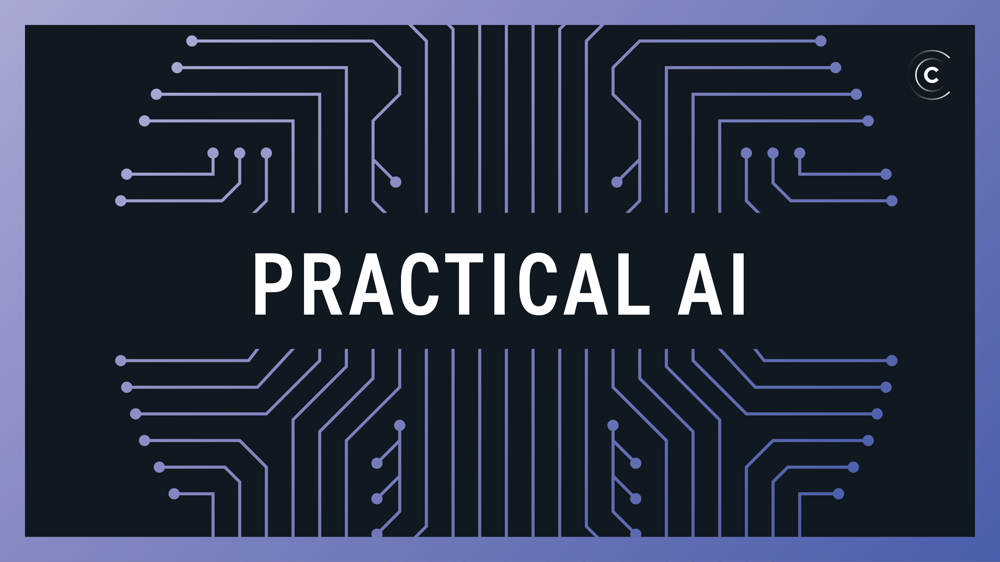

Bringing artificial intelligence and MIT to middle school classrooms
MIT researchers and collaborators have developed an open-source curriculum to teach young students about ethics and artificial
intelligence.
In the age of Alexa, YouTube recommendations, and Spotify playlists, artificial intelligence has become a way of life, improving marketing and advertising, e-commerce, and more. But what are the ethical implications of technology that collects and learns personal information? How should society navigate these issues and shape the future?
A new curriculum designed for middle school students aims to help them understand just that at an early age, as they grow up surrounded by the technology. The open-source educational material, designed by an MIT team and piloted at this year’s Massachusetts STEM Week this past fall, teaches students how AI systems are designed, how they can be used to influence the public — and also how to use them to be successful in jobs of the future.
During Mass STEM Week in October, middle schools across the commonwealth replaced their regular curriculum with an immersive week of hands-on learning led by a team including Cynthia Breazeal, associate professor of media arts and sciences at MIT; Randi Williams ’18, graduate research assistant in the Personal Robots Group at the MIT Media Lab; and the nonprofit organization i2 Learning.
“Preparing students for the future means having them engage in technology through hands-on activities. We provide students with tools and conceptual frameworks where we want them to engage with our materials as conscientious designers of AI-enabled technologies,” Breazeal says. “As they think through designing a solution to address a problem in their community, we get them to think critically about the ethical implications of the technology.”
Three years ago, the Personal Robots Group began a program around teaching AI concepts to preschoolers. This effort then broadened into planning learning experiences for more children, and the group developed a curriculum geared toward middle school students. Last spring, an AI curriculum was shared with teachers and piloted in Somerville, Massachusetts, to determine which activities resonated the most in the classrooms.
“We want to make a curriculum in which middle-schoolers can build and use AI — and, more importantly, we want them to take into account the societal impact of any technology,” says Williams.
This curriculum, How to Train Your Robot, was first piloted at an i2 summer camp in Boston before being presented to teachers from local schools during Mass STEM Week. The teachers, many of whom had little familiarity with STEM subjects, also participated in two days of professional development training to prepare them to deliver more than 20 class hours of AI content to their students. The curriculum ran in three schools across six classrooms.
The AI curriculum incorporates the work of Blakeley Hoffman Payne, a graduate research assistant in the Personal Robots Group, whose research focuses on the ethics of artificial intelligence and how to teach children to design, use, and think about AI. Students participated in discussions and creative activities, designing robot companions and using machine learning to solve real-world problems they have observed. At the end of the week, students share their inventions with their communities.
“AI is an area that is becoming increasingly important in people’s lives,” says Ethan Berman, founder of i2 Learning and MIT parent. “This curriculum is very relevant to both students and teachers. Beyond just being a class on technology, it focuses on what it means to be a global citizen.”
The creative projects provided opportunities for students to consider problems from a variety of angles, including thinking about issues of bias ahead of time, before a system is designed. For example, for one project that focused on sign language, the student trained her algorithm for understanding sign language around students of a wide range of skin tones, and incorporated adults, too — considering potential algorithmic bias to inform the design of the system.
Another group of students built a “library robot,” designed to help find and retrieve a book for people with mobility challenges. Students had to think critically about why and how this might be helpful, and also to consider the job of a librarian and how this would impact a librarian’s work. They considered how a robot that finds and retrieves books might be able to free up more of a librarian’s time to actually help people and find information for them.
Some of the current opportunities include scaling for more classrooms and schools, and also incorporating some other disciplines. There is interest in incorporating social studies, math, science, art, and music by finding ways to weave these other subjects into the AI projects. The main focus is on experiential learning that impacts how students think about AI.
“We hope students walk away with a different understanding of AI and how it works in the world,” says Williams, “and that they feel empowered to play an important role in shaping the technology.”